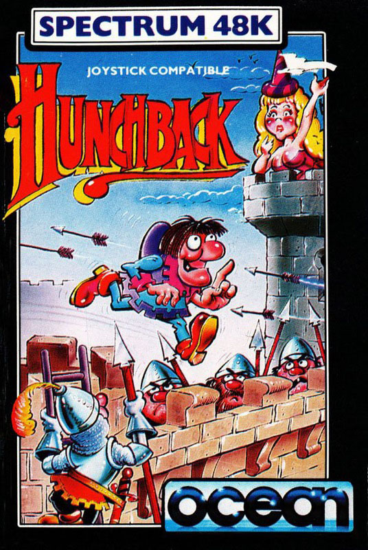
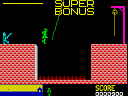

Hunchback


{kind=link}

| Publisher: | Ocean |
| Price: | £5.90 |
| Year: | 1984 |
| Source: | CRASH, Issue 2 |
Hunchback seems to have been quite a while a'coming, so its pleasing to be able to report that It seems worth the waiting. In some sense It's a platform, hole-leaping game that takes place on one platform. The story, as the title says, is set on a great castle and you are the (well known) hunchback, Quasimodo. Your task Is to rescue Esmeralda from the stronghold. To do this you must jump, leap and dodge your way across no less than 15 screens of sheer torture.

The screen shows a large wall reaching half way up. Quasimodo starts on the left and he must reach the bell rope on the right. At the base of the screen Is a graphic representation of the 15 ram parts to be tackled. The problems encountered include fire balls which must be leapt, pits to be swung across on a rope, and others which need several ropes, castellations filled with spearmen who raise and lower their spears and must be jumped, and then combinations of all these elements. Additionally there Is a red knight climbing the wall. If he reaches the top before Quasimodo gets across, he sticks his sword into his bottom! If you get through to the final screen you are rewarded by the sight of Esmerelda stuck in her tower, ready for rescue.
CRITICISM
The graphics are smooth, well detailed and nicely animated, especially Quasimodo, and the colours are well used too. Quite what the tune 'If you go down to the woods today... ' has got to do with Quasimodo I don't know, but It sounds good. I found this game very playable, although when you lump across the pit on a rope, timing has to be spot on with no +1 or -1 variation. I think that could have been made easier.'
'At first playing Hunchback is fun and difficult, but the screens are made up of re-using the same elements in different combinations and eventually it gets visually boring. It certainly demands skills of timing and reaction, especially when jumping over spears and dodging two arrows or fireballs coming from opposite directions.'
'Hunchback looks very good, bright, cheerful and with a loud tune. I think it could have had a bit more sound during the frame though. It's also quite difficult to play well, but in the end I think it palls as there isn't quite enough variation in the screens. This game will probably appeal to younger players as an intermediate stage between very simple games and the more complicated ones that are now appearing. But on the whole quite good value for money.'
COMMENTS
| Control keys: | Good, OAN left right and SYMBOL SHIFT for jump |
| Joystick: | Kempston, Protek, AGF, Sinclair a 2 |
| Keyboard play: | Responsive but jump timing very hard |
| Colour: | Good |
| Graphics: | Good |
| Sound: | Good tunes |
| Skill levels: | 1 |
| Lives: | 2 |
| Screens: | 15 |
| General rating: | Good value and reasonably addictive. |
| Use of computer: | 72% |
| Graphics: | 68% |
| Playability: | 65% |
| Getting started: | 70% |
| Addictive qualities: | 59% |
| Value for money: | 62% |
| Overall: | 66% |